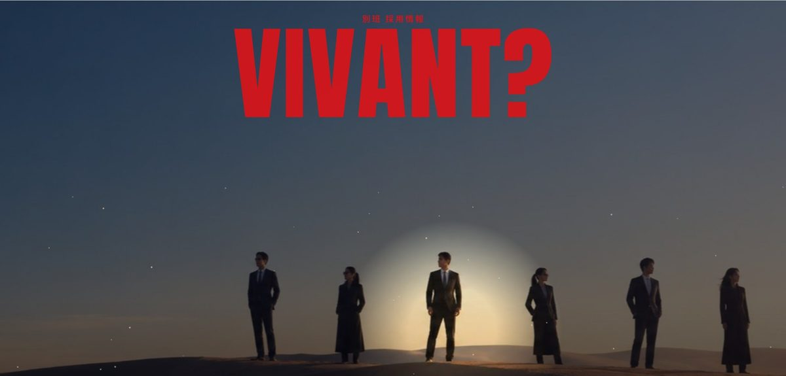
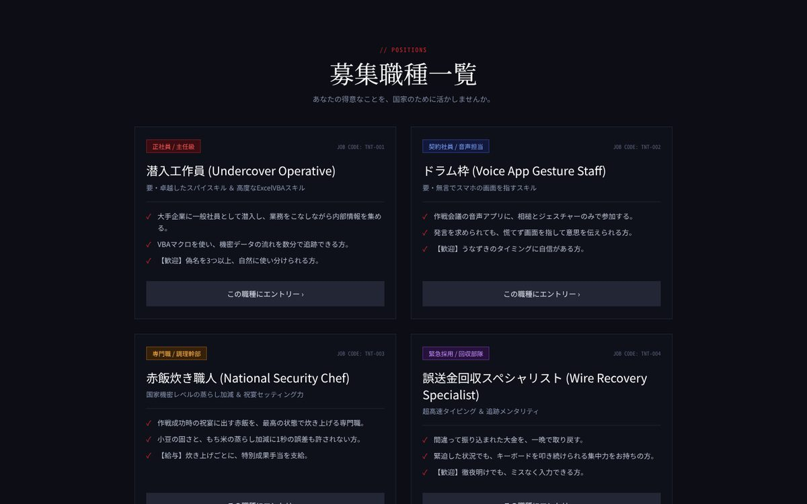
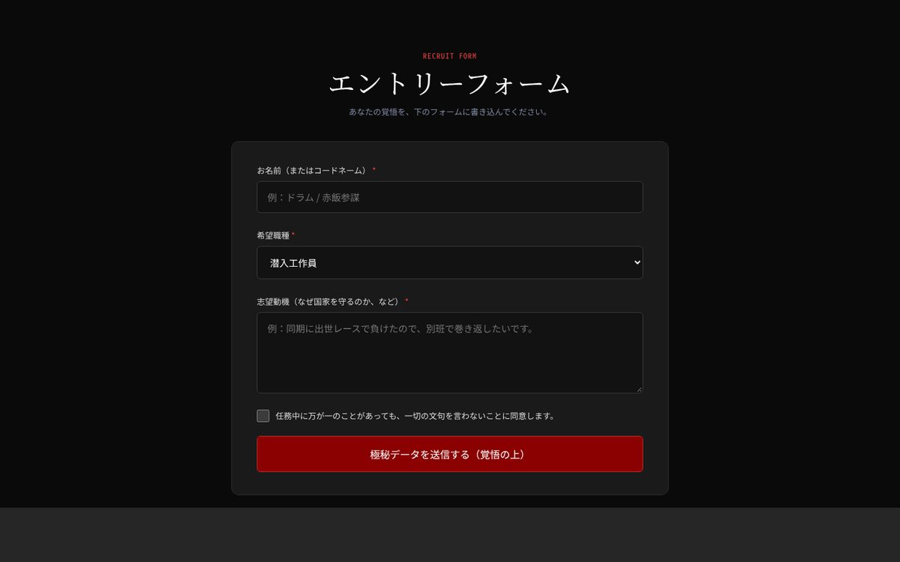
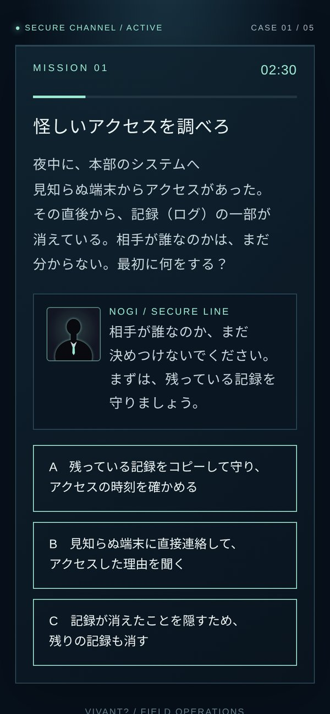
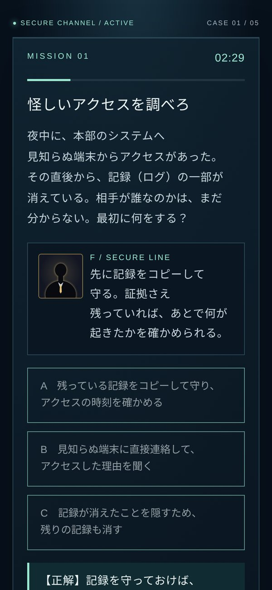

採用サイト・ミッションアプリ／授業課題・ペア制作
VIVANT? 採用情報
ドラマの世界観を借りた、架空組織のパロディ採用サイトです。「普通じゃないは、武器になる。」をメッセージに、本格的な見た目と意外なユーモアを両立させました。応募フォームを送ると、スパイ体験ができるミッションアプリへつながります。
- 制作
- 授業課題（2人のペア制作）
- 期間
- 約10日（発表用のスライドを含む）
- 担当
- 採用サイトの構成案と設計、AIへの実装指示、画像の差し替えとBGMの追加・確認／アプリの構成案とデザイン
- ツール
- Photoshop、Claude、Gemini、ChatGPT
- 素材
- 写真はAIで生成。BGMはブラウザの音声機能で生成

依頼主と目的
課題では、依頼主のペルソナを設定してから制作しました。
- 依頼主：金城 二戸琉（きんじょう にこる）、42歳。秘密組織「別班」の採用広報責任者。真面目さと独特なユーモアを持つ人物
- 依頼の背景：組織の拡大に伴い、新しい人材を採用したい。組織の信頼感を伝えながら、仕事内容や応募方法が分かりやすい採用サイトが必要
一般的な採用サイトとは違い、見た人の印象に残り、楽しみながら最後まで見てもらえるサイトを目指しました。
コンセプト
「本格的な見た目 × 意外なユーモア」。黒とグレーを中心に赤を差し色にして、秘密組織らしい緊張感を出しました。一方で、募集職種には「潜入工作員」だけでなく「赤飯炊き職人」「砂漠案内係」などを用意し、社員インタビューでも、赤飯の蒸らし加減を国家機密のように語るなど、設定に合わせたユーモアを入れています。
ファーストビューの演出
映画が始まるような雰囲気を目指し、ファーストビューに動きを加えました。
- 写真がゆっくりズームし、スクロールに合わせて奥行きが出る
- タイトルが1文字ずつ現れ、最後の「?」だけ少し遅れて出る
- キャッチコピーの前に「間」を置く
- 暗号を解読しているように文字が変わる演出、砂ぼこりの粒、サーチライト

見るだけで終わらない仕掛け
- コードネームの生成：ボタンを押すと言葉がランダムに組み合わさり、自分だけのコードネームが出る
- 職種から応募へ：気になる職種のボタンを押すと、その職種が選ばれた状態で応募フォームへ移動する
- 送信後の演出：応募を送ると「通信が傍受された」という警告が出て、そのままアプリへ移動する
楽しさだけでなく、募集職種・社員インタビュー・FAQ・応募フォームをそろえ、採用サイトとして必要な情報を探せる構成にしています。スマホでも見やすいよう、画面幅に合わせてレイアウトが変わります。


ミッションアプリ
採用サイトを見た人に、さらに世界観を楽しんでもらうためのスパイ体験アプリです。アプリの構成案とデザインを担当しました。
- 乃木からの指令で始まる、5つのミッション
- それぞれ3つの選択肢から行動を選ぶ。制限時間150秒で、判断の緊張感を出す
- 選んだ答えごとに、正解・不正解の理由を表示する
- 5問の結果から任務達成度を判定し、最後は採用情報へ戻る


掲載にあたっての配慮
授業で作った元の版では、社員インタビューやアプリの人物画像に、実在の俳優に似せたAI画像を使っていました。ポートフォリオとして公開するにあたり、実在の人物の肖像に配慮して、すべてシルエットに差し替えています。
苦労したこと・学んだこと
グループ学習の最初の作品だったので、何から始めればいいか分からず、見切り発車になってしまいました。それでも、ペアの人と考えをすり合わせながら完成させることができました。
実務でもチームで動くことになるので、お互いの考えをすり合わせ、話し合うことが大事だと感じました。